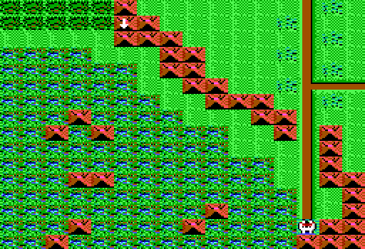

Area D4
| X | Y | Event |
| 14 | 11 | The Guardian defends the sword of honor. Challenge for it (y/n)? |
| 14 | 15 | Yellow message 6 |
| 13 | 1 | Castle Hillstone |
| 12 | 10 | Yellow message 4 |
| 9 | 11 | Enter farm of fear |
| 7 | 14 | Outcast lepers sit around large tables playing various games. A sign reads"LeperCon". Disrupt(y/n)? |
| 3 | 7 | A sign above a dark hole reads, "Dawn's Cavern, Keep Out!" |